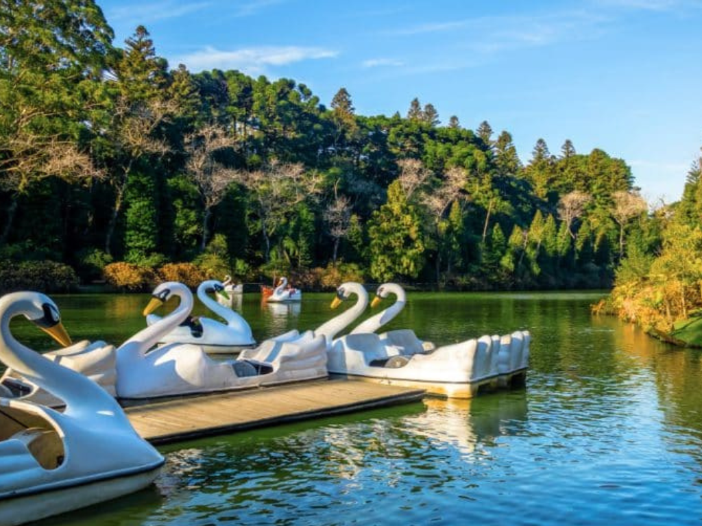

O Rio Grande do Sul é o estado mais ao sul do Brasil e possui uma forte identidade cultural marcada pelas tradições gaúchas, como o chimarrão, o churrasco e as danças típicas. Sua capital, Porto Alegre, é um importante centro econômico, cultural e educacional da região Sul. O estado apresenta clima subtropical, com temperaturas mais baixas no inverno e paisagens variadas que incluem pampas, serras e áreas litorâneas. A economia gaúcha é diversificada, destacando-se a agropecuária, a produção de vinhos, a indústria e o comércio. Além disso, o Rio Grande do Sul possui forte influência das imigrações alemã e italiana, refletida na arquitetura, na culinária e nas festas tradicionais presentes em diversas cidades do estado.
